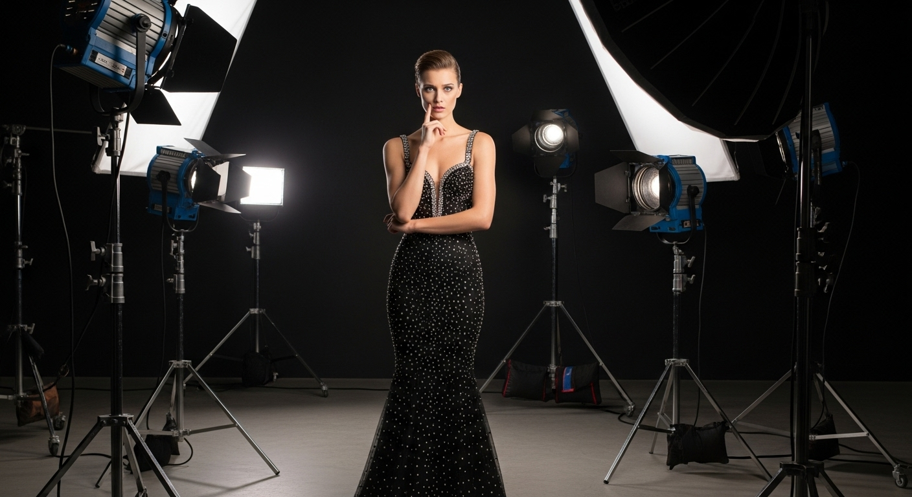

Preguntas a Modelos
Lo que Sí y No Debes
Al adentrarte en el mundo del modelaje, es crucial saber cómo dirigirte a las modelos con experiencia para obtener información valiosa que te ayude en tu carrera. Aquí te presento unas preguntas que debes evitar y las que te ayudarán a obtener consejos útiles:
Lo que No Debes Preguntar a una Modelo:
- ¿Qué me recomiendas para la piel? Las modelos pueden compartir lo que les ha funcionado, pero recuerda que no son dermatólogas ni especialistas en cuidado de la piel.
- ¿Cuál dieta es mejor? Cada cuerpo es diferente y las necesidades dietéticas varían. Lo que funciona para una modelo puede no ser adecuado para ti.
- ¿Qué rutina de ejercicio me recomiendas para bajar de peso? Las modelos tienen rutinas diseñadas para sus necesidades específicas, pero estas pueden no ser apropiadas para todos. Consulta a un profesional de la salud para obtener consejos personalizados.
- ¿Me enseñas a caminar sobre tacones? ¿Cómo busco una agencia? ¿Cómo posar? Estas son habilidades específicas que las modelos han aprendido a lo largo de su carrera y pueden no ser expertas en enseñarlas. Es mejor buscar capacitación profesional en estos aspectos.
Lo que Sí Debes Preguntar:
- ¿Qué agencias has conocido? Obtén información sobre las agencias con las que ha trabajado y su experiencia con ellas.
- ¿Cómo trabajan los fotógrafos con las modelos? Aprende sobre la dinámica entre fotógrafos y modelos para entender mejor el proceso de trabajo.
- ¿Dónde o con quién aprendiste a caminar y posar? Conoce las fuentes de formación de la modelo para obtener recomendaciones sobre entrenadores o academias confiables.
- ¿Cuáles han sido tus presupuestos por trabajo? Entender los estándares del mercado te ayudará a establecer expectativas realistas.
- Si haces ejercicio, ¿quién te ha entrenado o qué gimnasio recomiendas? Obtén información sobre entrenadores o lugares de entrenamiento de confianza.
- ¿Has consultado a un médico para tu dieta o cuidado de la piel? Averigua si la modelo ha buscado asesoramiento profesional en áreas relacionadas con la salud y el bienestar.
- ¿Cómo son los castings? Obtén información sobre el proceso de casting y las expectativas comunes en la industria del modelaje.
Además de las preguntas mencionadas anteriormente, también podrías beneficiarte de con las siguientes preguntas:
- ¿Cuál ha sido tu experiencia trabajando con diferentes estilos y marcas? Esta pregunta puede ayudarte a comprender la versatilidad y adaptabilidad requerida en la industria del modelaje.
- ¿Cómo manejas la presión y el estrés durante sesiones de fotos o desfiles? Obtener consejos sobre cómo gestionar el estrés puede ser invaluable para ti que están comenzando en la industria.
- ¿Cuál ha sido tu mayor desafío como modelo y cómo lo superaste? Escuchar sobre los desafíos y las soluciones de modelos experimentadas puede brindarte inspiración y orientación a obstáculos similares que te puedes enfrentar.
- ¿Cómo mantienes un equilibrio entre tu vida personal y profesional como modelo? Entender cómo las modelos exitosas manejan su vida personal y profesional puede ayudarte a encontrar un equilibrio saludable en tu propia vida.
- ¿Qué consejos tienes para mantener una imagen profesional y una actitud positiva en la industria del modelaje? Obtener orientación sobre cómo mantener una imagen profesional y una actitud positiva puede ser invaluable para destacar en la industria.
- ¿Cuál es tu proceso para prepararte para una sesión de fotos o un desfile? Conocer el proceso de preparación de modelos experimentadas puede ayudarte a desarrollar tus propias rutinas y hábitos para maximizar tu rendimiento.
Al hacer preguntas informadas y respetuosas, podrás obtener orientación invaluable de las modelos que te ayudará a avanzar en tu carrera con confianza.